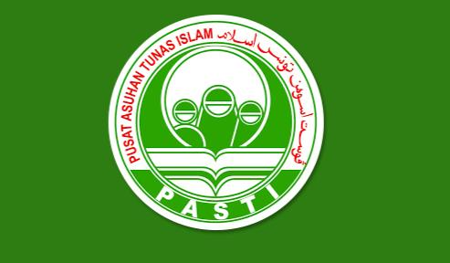
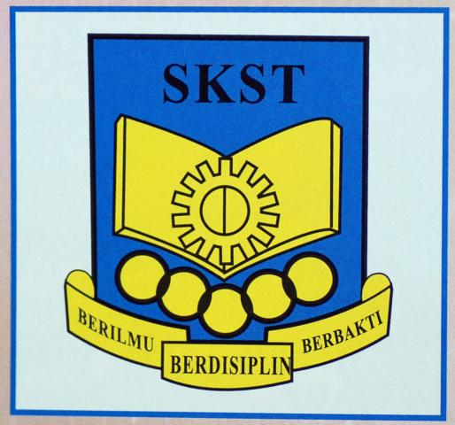
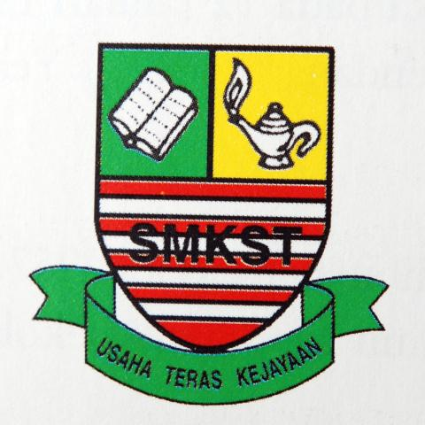
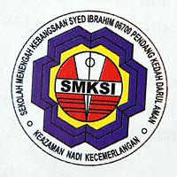
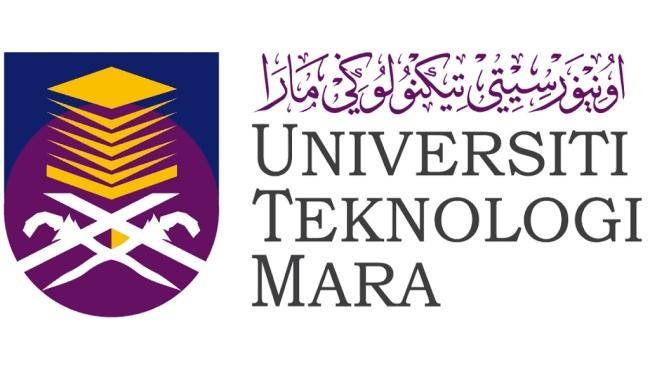

|  |
TADIKA PASTI AL-HIDAYAH
- When I was 5 years old, my parents send me to Tadika Pasti Al-Hidayah.
- I'm went to Tadika Pasti Al-Hidayah until I'm 6 years old.
|
|  |
SEKOLAH KEBANGSAAN SUNGAI TIANG
- I move to Pendang when I was 11 years old and school at Sekolah Kebangsaan Sungai Tiang and I met new friends.
- I love this school so much because the teachers and students here is very friendly.
|
|  |
SEKOLAH MENENGAH KEBANGSAAN SUNGAI TIANG
- After I finished my primary school, I went to SMK Sungai Tiang.
- I finished all my study and take Sijil Pelajaran Malaysia (SPM) at this school.
|
|  |
SEKOLAH MENENGAH KEBANGSAAN SYED IBRAHIM
- After I finished my secondary school, I'm try to apply universities but I did not get it. So I decided to continues my studies to Pre-University.
- It is takes only 2 years to finished my study and then apply for Degree.
|
|  |
UNIVERSITI TEKNOLOGI MARA
- Alhamdulillah, after my hardword, I was offered to UiTM Merbok, Kedah. My course is Library Management
- This course have 7 semester which is I have 4 semester left.
|